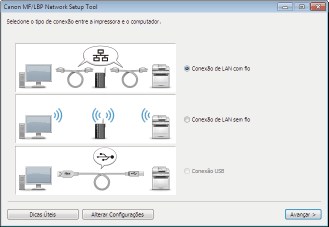
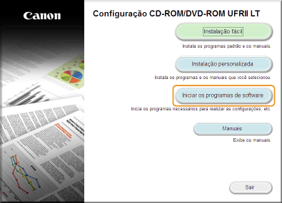
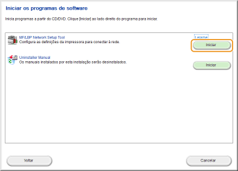
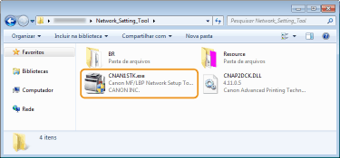

0KUF-00S
A MF/LBP Network Setup Tool é um utilitário que permite ajustar as configurações iniciais da rede de acordo com instruções mostradas na tela. O programa é iniciado automaticamente quando o driver de impressora é instalado a partir do CD-ROM ou DVD de Software do Usuário. Se quiser instalar o programa manualmente, pode usar o CD-ROM ou DVD de Software do Usuário ou iniciá-lo diretamente de um arquivo baixado do site da Canon.

|
|
|
O ambiente de sistema necessário para usar a MF/LBP Network Setup Tool é o mesmo necessário para o driver de impressora. Requisitos do sistema
Consulte Configuração das Definições de rede da LAN com Fio ou Configuração das Definições de conexão da LAN sem Fio para mais informações sobre como ajustar as configurações iniciais de rede utilizando a MF/LBP Network Setup Tool.
|
1
Faça o login no computador com uma conta de administrador.
2
Coloque o CD-ROM ou DVD no drive do computador.
3
Clique em [Iniciar os programas de software].


Se a tela acima não aparecer Exibindo a tela [Instalação de CD-ROM/DVD-ROM]
Se [Reprodução Automática] for exibido, clique em [Executar MInst.exe].
4
Clique em [Iniciar] na [MF/LBP Network Setup Tool].

A MF/LBP Network Setup Tool é um dos arquivos do pacote de instalação do driver de impressora. Para começar, baixe o driver de impressora, que contém o driver de impressora e os arquivos associados, do site da Canon em (http://www.canon.com/).
1
Descompacte o arquivo baixado.
2
Dê clique duplo em "CNAN1STK.exe" na pasta [Network_Setting_Tool].
